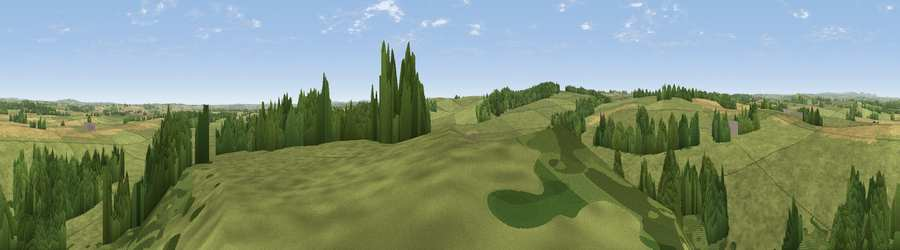

Viewpoint near Belsay
#22847 in England · top 57% of its area beats it · near BelsayWhere it is
The exact computed spot (NZ 07975 78575). Click the marker for map links.
The view, rendered

A 360° render of this exact spot computed from the terrain model, tree cover and land cover — summer colours, afternoon light, calibrated against photographs of famous viewpoints. Real trees, hedges and buildings will differ in detail.
The panorama
Grey silhouette: terrain skyline in each direction (720 bearings, Earth curvature and refraction included). Dashed green: skyline with trees (+15 m) and buildings (+8 m) as obstacles. Blue strip: how far the ground is visible on each bearing.
Where the view opens
Wedge length = distance to the farthest visible ground on that bearing (vegetation-aware). Rings at 10, 25 and 50 km.
What fills the view
62% grassland · 31% woodland · 7% cropland
Angular shares of the visible panorama (visual magnitude), not map area. Landscape diversity 0.37 (0–1 Shannon).
Key numbers
More beautiful places nearby
The staircase of upgrades: each row has a higher view potential than everything closer. Driving times are estimates from straight-line distance, calibrated against real road routing — check an actual route before setting out.
| Place | Direction | Drive | Score |
|---|---|---|---|
| Shaftoe Crags | NW · 4 km | ~10 min | 68.7 |
| Viewpoint near West Woodburn | WNW · 16 km | ~29 min | 73.4 |
| Viewpoint near Greenside | SSE · 18 km | ~31 min | 74.2 |
| Darden Rigg | NNW · 20 km | ~34 min | 77.0 |
| Viewpoint near Rothbury | N · 20 km | ~34 min | 81.1 |
| Dove Crag | NNW · 20 km | ~34 min | 82.3 |
| Viewpoint near Glanton | N · 37 km | ~56 min | 82.9 |
| Viewpoint c12273_7856 | NNW · 38 km | ~57 min | 83.7 |
55.10153, -1.87655 · source: screening · position refined by local search. Computed location — check access rights before visiting.